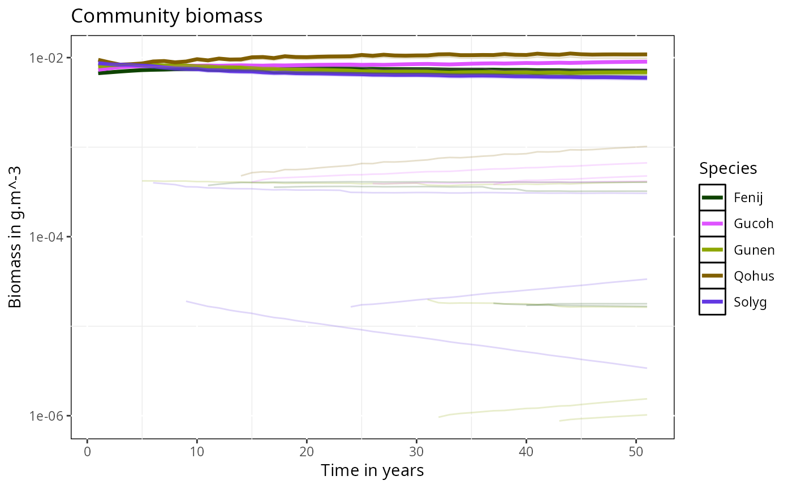

Runs an evolutionary simulation by alternating projection steps and phenotype mutation / species invasion events.
Arguments
- params
A
MizerParamsobject created byevoParams().- initCondition
An optional previous
MizerSimobject to continue from.- t_max
Total simulation time in years. Default is 100.
- dt
Time step for projection. Default is 0.1.
- mutation
Mutation rate per time step per thousand (if numeric), or a data frame specifying mutation events.
- trait
The trait subject to mutation. Default is
"w_mat".- initPool
Initial number of mutant phenotypes created at start. Default is 0.
- initSpread
Spread factor for initial phenotype trait distribution. Default is 5.
- alien
Rate of alien invasions per time step per thousand (if numeric), or a data frame of invading species.
- alien_init_n
Multiplier for initial alien abundance density.
- trait_range
Optional trait range data frame for
alien_synthesis().- saveFolder
Directory for storing temporary simulation step files.
- effort
Fishing effort. Default is 0.
Examples
# \donttest{
saveFolder <- file.path(tempdir(), "simTemp")
dir.create(saveFolder, showWarnings = FALSE)
params <- evoParams(no_sp = 5, RDD = "extinctionRDD")
#> ℹ No `a` column so using a = 0.01 in w = a l^b, with w in g and l in cm.
#> ℹ No `b` column so using the isometric default b = 3 in w = a l^b.
#> ℹ Using f0, h, lambda, kappa and the predation kernel to calculate gamma.
#> Warning: Some column names in your species parameter data frame are very close to standard parameter names: `zeta` (did you mean `beta`?). Please check for mis-spellings.
sim <- evoProject(params = params, t_max = 50, mutation = 5,
saveFolder = saveFolder)
plotDynamics(sim)

# }